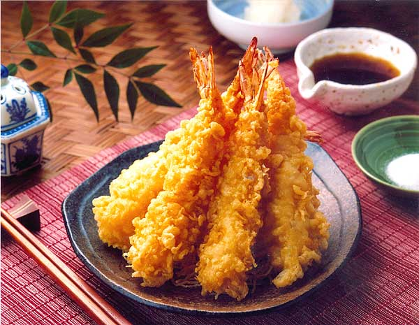

รายละเอียดของเทมปุระ (Tempura)
เทมปุระเป็นอาหารญี่ปุ่นที่ประกอบด้วยวัตถุดิบต่างๆ เช่น ผักและอาหารทะเล ที่ถูกชุบแป้งและทอดในน้ำมันร้อนจนกรอบ มักเสิร์ฟพร้อมซอสหรือเกลือสำหรับจิ้ม.
ประวัติ: เทมปุระมีต้นกำเนิดจากการปรุงอาหารของชาวโปรตุเกสที่เข้ามาในญี่ปุ่นในศตวรรษที่ 16 และได้รับการปรับปรุงและพัฒนาโดยชาวญี่ปุ่น.
การเตรียม: การทำเทมปุระเริ่มต้นด้วยการเตรียมวัตถุดิบที่ต้องการ เช่น กุ้ง, ฟักทอง, และเห็ด จากนั้นจะชุบด้วยแป้งที่ผสมกับน้ำเย็นแล้วนำไปทอดในน้ำมันร้อนจนกรอบ.